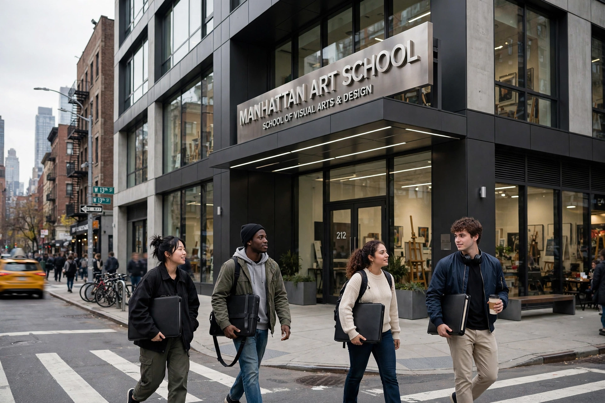

School of Visual Arts
| School of Visual Arts | |
 | |
| Type | Private art and design school |
|---|---|
| Established | 1947 |
| Founder | Silas H. Rhodes and Burne Hogarth |
| President | David Rhodes |
| Location | New York City, New York, U.S. |
| Enrollment | Approximately 3,600 undergraduates |
The School of Visual Arts (SVA) is a private, for-profit art and design school in Manhattan, New York City. Founded in 1947 by Silas H. Rhodes and Burne Hogarth as the Cartoonists and Illustrators School, it is known for its faculty of working professionals and its influence on illustration, cartooning, graphic design, advertising, animation and fine art in the United States.
History
The school began in 1947 with three faculty members and 35 students, teaching cartooning and illustration to returning World War II veterans. It was renamed the School of Visual Arts in 1956. Under Silas Rhodes, and later his son David Rhodes, SVA grew into one of the largest independent art colleges in the United States, with buildings concentrated around Gramercy Park and Chelsea.
SVA became famous for its provocative advertising campaigns, including subway posters designed by faculty artists such as Milton Glaser, whose "I Love New York" logo became iconic, and George Tscherny. Its faculty has included artists and designers such as Marshall Arisman, Louise Fili and Paula Scher.
Academics
SVA offers undergraduate Bachelor of Fine Arts degrees in fields including advertising, animation, cartooning, computer art, design, film, fine arts, illustration, interior design, photography and video, and visual and critical studies, as well as numerous Master of Fine Arts programs. The school is accredited by the Middle States Commission on Higher Education.
Notable alumni
Alumni include cartoonists and illustrators such as Art Spiegelman (see RAW), Bill Griffith, and many others across comics, film and design.